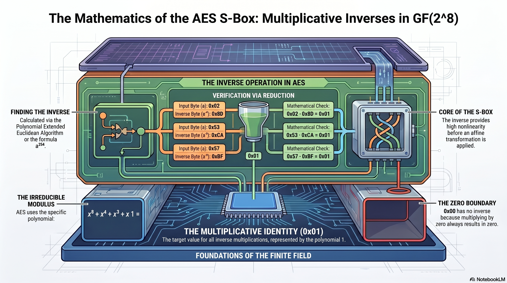

Learning objectives
- Define the multiplicative inverse of a byte in \(\mathrm{GF}(2^8)\).
- Explain why
0x00has no inverse and why every other byte does. - Verify an inverse pair by computing the \(\mathrm{GF}(2^8)\) product and confirming it equals
0x01. - Name four methods for finding inverses: brute force, polynomial extended Euclidean algorithm, exponentiation, and lookup table.
- Describe the role of the inverse step in the AES S-box construction.
Why this tutorial exists
We now know how to multiply bytes in \(\mathrm{GF}(2^8)\). The next question is: can multiplication be undone? For every nonzero byte in the AES field, the answer is yes. Each nonzero byte has a multiplicative inverse: another byte that multiplies with it to give 0x01.
This tutorial is about the “undo button” for finite-field multiplication. In ordinary arithmetic, the inverse of 5 is \(1/5\), because \(5\cdot(1/5)=1\). In AES's byte field, the inverse of a byte is another byte, and the product is 0x01.
What you should know first
You should understand multiplication in \(\mathrm{GF}(2^8)\), especially the AES modulus:
You should also remember the extended Euclidean algorithm from integers, because the polynomial version is one way to find inverses in finite fields.
Symbols used in this tutorial
This lesson reuses inverse notation, but now the objects are bytes, not ordinary integers.
| Symbol or notation | Friendly meaning | Technical meaning |
|---|---|---|
| \(a\) | The byte we want to invert. | A nonzero element of \(\mathrm{GF}(2^8)\). |
| \(a^{-1}\) | The byte that undoes multiplication by \(a\). | The multiplicative inverse of \(a\), satisfying \(a\cdot a^{-1}=1\). |
0x01 |
The multiplication identity byte. | The field element represented by polynomial \(1\). |
0x00 |
The zero byte. | The additive identity. It has no multiplicative inverse. |
| \(m(x)\) | The AES folding-rule polynomial. | \(x^8+x^4+x^3+x+1\). |
| \(\gcd(a(x),m(x))=1\) | The byte-polynomial and the AES modulus share no meaningful factor. | The condition that guarantees an inverse modulo \(m(x)\). |
| \(a(x)b(x)\equiv1\pmod{m(x)}\) | The two byte-polynomials multiply to 1 after reduction. | \(b(x)\) is the inverse of \(a(x)\) modulo \(m(x)\). |
The big idea
In a field, every nonzero element has a multiplication partner that brings it back to 1. Since AES's byte arithmetic uses an irreducible modulus, the 255 nonzero bytes all have inverses. The only byte without an inverse is 0x00.
0x010x01Definition: multiplicative inverse in \(\mathrm{GF}(2^8)\)
For a nonzero byte \(a\), the multiplicative inverse of \(a\) in \(\mathrm{GF}(2^8)\) is the byte \(b\) such that:
Equivalently, using polynomial notation:
Why 0x00 has no inverse
The zero byte cannot have a multiplicative inverse because multiplying by zero always gives zero:
No choice of \(b\) can make the result become 0x01.
Every nonzero byte has an inverse in AES's \(\mathrm{GF}(2^8)\). The zero byte does not.
Why every nonzero byte has an inverse
AES reduces byte-polynomials modulo an irreducible degree-8 polynomial:
Because \(m(x)\) is irreducible over \(\mathrm{GF}(2)\), the arithmetic world produced by reducing modulo \(m(x)\) is a field. In a field, every nonzero element has a multiplicative inverse.
In integer modular arithmetic, inverses exist for numbers coprime to the modulus. In polynomial modular arithmetic, a byte-polynomial has an inverse when it is coprime to the modulus polynomial. Since the AES modulus is irreducible, every nonzero byte-polynomial is coprime to it.
How to check an inverse
To check whether one byte is the inverse of another, multiply them in \(\mathrm{GF}(2^8)\). If the result is 0x01, they are inverses.
| Byte | Candidate inverse | Product in \(\mathrm{GF}(2^8)\) | Inverse? |
|---|---|---|---|
0x53 | 0xCA | 0x01 | Yes |
0x57 | 0xBF | 0x01 | Yes |
0x02 | 0x8D | 0x01 | Yes |
Interactive: inverse finder and verifier
Enter any nonzero byte. The explorer finds its inverse by brute force, then steps through the full GF(2⁸) multiplication — bit grids, xtime chain, folding steps, and final accumulation — to confirm the product is 0x01.
Worked example 1: verify that 0x8D is the inverse of 0x02
The byte 0x02 represents \(x\). The candidate inverse 0x8D is:
Multiply by \(x\):
Reduce \(x^8\) using the folding rule:
Substitute and cancel duplicates:
So 0x8D is the inverse of 0x02.
Worked example 2: verify the famous AES S-box inverse pair
In the AES S-box construction, 0x53 has multiplicative inverse 0xCA in \(\mathrm{GF}(2^8)\). The inverse step is not the entire S-box, but it is the core nonlinear move.
Multiplying these two byte-polynomials and reducing by the AES modulus gives:
We will not expand every term here because the product is longer, but the check is the same principle: multiply, reduce, and see whether the result is 0x01.
How inverses can be found
There are several ways to find a multiplicative inverse in \(\mathrm{GF}(2^8)\). This course will treat them as different tools, not different truths.
| Method | Basic idea | Why it matters |
|---|---|---|
| Brute force search | Try every nonzero byte until the product is 0x01. |
Simple and good for learning or small tools. |
| Polynomial extended Euclidean algorithm | Find coefficients \(s(x)\) and \(t(x)\) such that \(s(x)a(x)+t(x)m(x)=1\). | Mathematically direct and general. |
| Exponentiation | Use the finite-field fact that \(a^{-1}=a^{254}\) for nonzero bytes. | Useful in implementations and theory. |
| Lookup table | Precompute each byte's inverse. | Fast, but table-based designs can raise implementation concerns. |
Finding inverses: the polynomial extended Euclidean algorithm
The integer extended Euclidean algorithm produces equations like:
The polynomial version has exactly the same shape. Given \(a(x)\) and \(m(x)\), find \(s(x)\) and \(t(x)\) such that:
Reduce modulo \(m(x)\) — the \(t(x)m(x)\) term vanishes — and you have:
So \(s(x)\) is the inverse of \(a(x)\). The algorithm that builds \(s(x)\) runs as a table — each row produces a smaller remainder until the remainder hits 1, at which point the \(s\) value in that row is the answer.
A natural first instinct is: "0x53 and 0x11B look like integers — why not just run gcd(83, 283) using regular integer arithmetic?" The integer EEA does find an answer, but it is the wrong answer for a completely different algebraic problem.
The integer EEA solves \(83 \cdot s \equiv 1 \pmod{283}\) in the ring \(\mathbb{Z}/283\mathbb{Z}\). It gives \(s = 208 = \texttt{0xD0}\).
Verify: \(83 \times 208 = 17264 = 61 \times 283 + 1\). ✓ This is correct integer arithmetic.
But try it in \(\mathrm{GF}(2^8)\): \(\texttt{0x53} \times \texttt{0xD0} = \texttt{0x4E} \neq \texttt{0x01}\). ✗
The actual GF(2⁸) inverse is \(\texttt{0xCA}\).
Why they differ: the bit pattern 0x11B is shared by two completely different mathematical objects:
- As an integer: it is the number 283, a prime. The ring \(\mathbb{Z}/283\mathbb{Z}\) has integer multiplication with carries between bit positions.
- As a GF(2⁸) modulus: it is the polynomial \(x^8+x^4+x^3+x+1\). The field has polynomial multiplication where every coefficient is reduced mod 2 — no carries, ever.
The simplest demonstration of the difference: \(\texttt{0x53}+\texttt{0x53}=\texttt{0xA6}\) in integer arithmetic (bits carry), but \(\texttt{0x53}\oplus\texttt{0x53}=\texttt{0x00}\) in \(\mathrm{GF}(2^8)\) (every element plus itself is zero). The arithmetic is fundamentally different, so the same algorithm run on the same bit patterns produces different — and incompatible — results.
Always use the polynomial EEA, with polynomial division and XOR throughout.
The algorithm as a table
Maintain two columns — a remainder \(r\) and a coefficient \(s\) — and initialise them with \(m(x)\) and \(a(x)\):
| Row | \(r\) (remainder) | \(s\) (coefficient of \(a(x)\)) |
|---|---|---|
| 0 | \(m(x)\) | 0 |
| 1 | \(a(x)\) | 1 |
| 2 | \(r_0 \bmod r_1\) | \(s_0 \oplus q_1 \cdot s_1\) |
| ⋮ | ⋮ | ⋮ |
| k | 1 | ← this is \(a^{-1}\) |
At each row: divide the previous two remainders to get quotient \(q\) and new remainder \(r\). Update \(s\) using \(s_{\text{new}} = s_{\text{two-back}} \oplus (q \cdot s_{\text{prev}})\). All arithmetic is polynomial arithmetic over \(\mathrm{GF}(2)\) — no reduction by \(m(x)\) during the algorithm itself, just XOR for addition and shift-XOR for multiplication.
Worked example: find the inverse of \(\texttt{0x53}\)
\(\texttt{0x53} = x^6+x^4+x+1\). We want \(s(x)\) such that \((x^6+x^4+x+1)\cdot s(x)\equiv 1\pmod{m(x)}\).
Initialise
| Row | \(r\) | hex | \(s\) | hex |
|---|---|---|---|---|
| 0 | \(x^8+x^4+x^3+x+1\) | 0x11B | \(0\) | 0x00 |
| 1 | \(x^6+x^4+x+1\) | 0x53 | \(1\) | 0x01 |
Step 1 — divide row 0 by row 1
| Quotient term | Subtract (XOR) | Remainder so far |
|---|---|---|
| \(x^8\div x^6=x^2\) | \(x^2\cdot(x^6+x^4+x+1)=x^8+x^6+x^3+x^2\) | \(x^6+x^4+x^2+x+1\) |
| \(x^6\div x^6=1\) | \(1\cdot(x^6+x^4+x+1)=x^6+x^4+x+1\) | \(x^2\) |
\(q_1=x^2+1\) (0x05), \(r_2=x^2\) (0x04)
Update \(s\): \(s_2 = s_0\oplus(q_1\cdot s_1) = 0\oplus(x^2+1)\cdot 1 = x^2+1\) (0x05)
Step 2 — divide row 1 by row 2
| Quotient term | Subtract (XOR) | Remainder so far |
|---|---|---|
| \(x^6\div x^2=x^4\) | \(x^4\cdot x^2=x^6\) | \(x^4+x+1\) |
| \(x^4\div x^2=x^2\) | \(x^2\cdot x^2=x^4\) | \(x+1\) |
\(q_2=x^4+x^2\) (0x14), \(r_3=x+1\) (0x03)
Update \(s\): \(s_3 = s_1\oplus(q_2\cdot s_2) = 1\oplus(x^4+x^2)\cdot(x^2+1)\)
\((x^4+x^2)(x^2+1)=x^6+x^4+x^4+x^2=x^6+x^2\) (0x44)
\(s_3 = 1\oplus(x^6+x^2) = x^6+x^2+1\) (0x45)
Step 3 — divide row 2 by row 3
| Quotient term | Subtract (XOR) | Remainder so far |
|---|---|---|
| \(x^2\div x=x\) | \(x\cdot(x+1)=x^2+x\) | \(x\) |
| \(x\div x=1\) | \(1\cdot(x+1)=x+1\) | \(1\) |
\(q_3=x+1\) (0x03), \(r_4=1\) — algorithm stops here
Update \(s\): \(s_4 = s_2\oplus(q_3\cdot s_3) = (x^2+1)\oplus(x+1)\cdot(x^6+x^2+1)\)
\((x+1)(x^6+x^2+1)=x^7+x^6+x^3+x^2+x+1\) (0xCF)
\(s_4 = (x^2+1)\oplus(x^7+x^6+x^3+x^2+x+1) = x^7+x^6+x^3+x\) (0xCA)
The remainder reached 1 at row 4. The \(s\) value in that row is the inverse:
\(\texttt{0x53}^{-1} = \texttt{0xCA}\)
Verify: \(\texttt{0x53}\times\texttt{0xCA}=\texttt{0x01}\) in \(\mathrm{GF}(2^8)\). ✓
Interactive: Extended Euclidean Algorithm — step by step
Enter any nonzero byte to find its GF(2⁸) inverse one step at a time. Every operation is shown with bit-level grids and plain-English explanations of exactly what is happening and why.
Throughout the algorithm we maintain two things in parallel: a remainder r and an inverse tracker s.
At every row, s is the answer to the question: "which polynomial, when multiplied by our input A, produces this remainder r — modulo M?"
So at row i: ri = A · si (mod M)
When r reaches 1, we have A · s ≡ 1 (mod M) — which means s is the inverse of A.
Connection to the AES S-box
The AES S-box is built in two major stages:
- Take the multiplicative inverse of the byte in \(\mathrm{GF}(2^8)\), with
0x00handled specially. - Apply an affine transformation, which is a structured bit-level transformation plus a constant.
The inverse operation supplies strong nonlinearity. The affine transformation then reshapes the result to improve cryptographic properties and avoid certain patterns. Together, they form the AES S-box.
For example, AES uses the inverse of 0x53, which is 0xCA, and then applies the affine transformation to produce the S-box output 0xED. That affine transformation is the subject of a later tutorial.
Common mistakes
The inverse of a byte in \(\mathrm{GF}(2^8)\) is another byte, not a fraction like \(1/a\).
0x00
Zero has no multiplicative inverse. AES handles 0x00 specially during the S-box inverse step.
To verify an inverse, multiply in \(\mathrm{GF}(2^8)\), not in ordinary decimal or hexadecimal integer arithmetic.
The inverse step is central, but AES also applies an affine transformation afterward.
The hex values look like numbers, so it is tempting to treat them as integers and compute \(\gcd(83, 283)\) using ordinary integer arithmetic. The integer EEA does produce a result — \(s = 208 = \texttt{0xD0}\), which satisfies \(83 \times 208 \equiv 1\pmod{283}\) as integers. But that result belongs to the ring \(\mathbb{Z}/283\mathbb{Z}\), not to \(\mathrm{GF}(2^8)\).
Check: \(\texttt{0x53}\times\texttt{0xD0}=\texttt{0x4E}\) in \(\mathrm{GF}(2^8)\). That is not \(\texttt{0x01}\). The integer approach gives the wrong answer because integer multiplication carries between bit positions, while GF(2⁸) polynomial multiplication does not — the two algebras are not the same even though they share a bit-pattern representation.
Practice problems
-
What byte is the multiplicative identity in \(\mathrm{GF}(2^8)\)?
Show solution
The multiplicative identity is
0x01, represented by the polynomial \(1\). -
Which byte has no multiplicative inverse?
Show solution
0x00has no multiplicative inverse, because zero times any byte is still zero. -
Verify that
0x8Dis the inverse of0x02.Show solution
0x02represents \(x\), and0x8Drepresents \(x^7+x^3+x^2+1\).\[ x(x^7+x^3+x^2+1)=x^8+x^4+x^3+x \] \[ x^8\equiv x^4+x^3+x+1 \] \[ (x^4+x^3+x+1)+x^4+x^3+x=1 \] -
If \(a\cdot b=\texttt{0x01}\) in \(\mathrm{GF}(2^8)\), what is \(b\) called?
Show solution
\(b\) is the multiplicative inverse of \(a\), written \(a^{-1}\).
-
Why does the AES S-box use multiplicative inverses?
Show solution
The inverse operation provides strong nonlinearity, which helps resist linear and differential patterns. AES then applies an affine transformation afterward.
Why this matters for cryptography
Multiplicative inverses in \(\mathrm{GF}(2^8)\) are one of the central mathematical ingredients of AES.
- They provide a nonlinear operation on bytes.
- They are used in the AES S-box construction.
- The irreducible AES modulus makes inverses exist for all nonzero bytes.
- They connect modular arithmetic, Euclidean algorithms, finite fields, and substitution layers.
- They are one reason AES has a clear mathematical structure rather than being a bag of arbitrary lookup values.
One-page recap
- A multiplicative inverse is the value that multiplies with another value to give 1.
- In \(\mathrm{GF}(2^8)\), the identity value is
0x01. - For a nonzero byte \(a\), its inverse \(a^{-1}\) satisfies \(a\cdot a^{-1}=\texttt{0x01}\).
0x00has no multiplicative inverse.- Every other byte does have an inverse because AES uses an irreducible modulus polynomial.
- To check an inverse, multiply in \(\mathrm{GF}(2^8)\), not with ordinary integer multiplication.
- The polynomial extended Euclidean algorithm can find inverses.
- Brute force, exponentiation, and lookup tables can also find or store inverses.
- The AES S-box uses the inverse step and then an affine transformation.
| Byte | Inverse | Check |
|---|---|---|
0x01 | 0x01 | 0x01 · 0x01 = 0x01 |
0x02 | 0x8D | 0x02 · 0x8D = 0x01 |
0x53 | 0xCA | 0x53 · 0xCA = 0x01 |
0x57 | 0xBF | 0x57 · 0xBF = 0x01 |
0x00 | none | Zero has no inverse. |
Module Infographic
This visual overview captures the key ideas from this module. Save it or print it as a reference sheet.

What comes next
The next tutorial should be The AES S-box: Inverse plus Affine Transformation. We will see how AES takes a byte's finite-field inverse and then applies a structured bit transformation to produce the final substitution value.